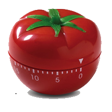

Pomodoro Technique Post-Impressionist The Pomodoro Technique is a time management method developed by Francesco Cirillo in the late 1980s. The technique uses a timer to break down work into intervals, traditionally 25 minutes in length, separated by short breaks. These intervals are named pomodoros, the plural in English of the Italian word pomodoro (tomato), after the tomato-shaped kitchen timer that Cirillo used as a university student.
If You want to know more about Pomodoro, please type Pomodoro in Google ✌
25
:
00
